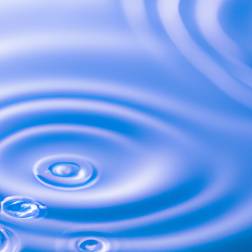

Hydrological Cycle
Hydrological Cycle
Evaporation and transpiration
Condensation and cloud formation
Precipitation and rain patterns
Surface runoff and river systems
Groundwater flow and aquifers
Snowmelt and glacial processes
Water storage in oceans lakes and reservoirs
Soil moisture and infiltration
Water balance and budgeting
Human impact on the hydrological cycle
Marine Ecosystems
Marine Ecosystems
Coral reefs and their biodiversity
Mangrove forests as coastal protectors
Ocean currents and climate regulation
Deepsea habitats and extremophiles
Intertidal zones and estuarine ecosystems
Marine food webs and trophic levels
Freshwater Ecosystems
Freshwater Ecosystems
Conservation efforts for marine species
Marine biogeochemical cycles
Impact of global warming on oceans
Water Resource Management
Water Resource Management
Rivers streams and creeks ecosystems
Lakes ponds wetlands habitats
Biodiversity in freshwater environments
Aquatic plants role in oxygenation
Freshwater fish species diversity
Invasive species impact on freshwater systems
Pollution threats to freshwater sources
Conservation strategies for freshwater biomes
Role of wetlands in flood control
Importance of riparian buffers
Cultural Significance of Water
Cultural Significance of Water
Sustainable water use practices
Desalination technologies for fresh water supply
Wastewater treatment processes
Rainwater harvesting techniques
Management of water during drought conditions
Transboundary water resource politics
Infrastructure for water distribution
Agricultural irrigation efficiency
Urban water demand management
Impact of climate change on water resources
About Us
Contact Us
Invasive species impact on freshwater systems
>
Groundwater
Invasive species represent a significant threat to freshwater ecosystems worldwide. These non-native organisms can disrupt the delicate balance of aquatic environments, often leading to unforeseen and far-reaching consequences.
The introduction of invasive species into freshwater systems is typically a result of human activity, whether intentional or accidental. Examples include the release of ornamental fish from home aquariums, the discharge of ballast water from ships that contains foreign organisms, or the spread of plants and animals through connected waterways.
Once established in a new habitat, invasive species can proliferate rapidly due to a lack of natural predators and an ability to outcompete native species for resources. This uncontrolled growth can lead to a reduction in biodiversity as indigenous plants and animals are displaced or driven to extinction.
One notorious example is the zebra mussel (Dreissena polymorpha), which has infested many lakes and rivers in North America. These mussels reproduce quickly and attach themselves in large numbers to any available surface. They filter large amounts of water, removing plankton that native species rely on for food, thereby altering food webs.
Hydrologic Cycle
Ocean Conservation
Additionally, zebra mussels can clog water intake pipes, causing problems for industrial facilities that rely on river water.
Another serious impact of invasive species is their potential to alter physical characteristics of their new environment. Certain plant invaders like hydrilla (Hydrilla verticillata) grow densely, changing water flow patterns and sedimentation rates. This alteration can affect spawning grounds for fish and create stagnant zones depleted in oxygen where few organisms can survive.
Invasive predators also pose a direct threat to native wildlife. The snakehead fish (Channa argus), originally from Asia, has become established in parts of the United States where it preys upon local fish populations unabated by natural enemies.
Irrigation
Its presence can drastically reduce numbers or even eliminate certain native species over time.
Combating invasive species is challenging and costly.
Water Cycle
Water and Sanitation
Prevention strategies such as stricter regulations on ballast water discharge or banning the importation of high-risk organisms are crucial first steps.
Bottled Water
Once an invader has taken hold, management approaches may include mechanical removal, chemical control methods like targeted pesticides or biological controls using introduced natural predators or diseases specific to the invader without harming natives.
Invasive species impact on freshwater systems - Irrigation
Water and Sanitation
Bottled Water
Wastewater Treatment
Ocean Conservation
Public education plays an essential role in preventing further introductions by informing people about responsible pet ownership and outdoor activities that could spread invasive species. Citizen science initiatives enable individuals to assist with early detection efforts so that rapid response measures can be implemented before an invasion becomes uncontrollable.
In conclusion, invasive species present one of the most pressing challenges facing freshwater ecosystems today.
Climate Change and Water
Their capacity for destruction highlights the importance of vigilant monitoring and proactive management practices aimed at preserving our vital aquatic habitats for future generations.

Wastewater Treatment
Invasive species impact on freshwater systems - Irrigation
Irrigation
Hydrologic Cycle
Climate Change and Water
Water Cycle
Water Law and Policy
Water Pollution
Hydrological Cycle
Check our other pages :
Water storage in oceans lakes and reservoirs
Agricultural irrigation efficiency
Deepsea habitats and extremophiles
Pollution threats to freshwater sources
Groundwater flow and aquifers
Frequently Asked Questions
What are invasive species and how do they get into freshwater systems?
Invasive species are organisms that are not native to a specific location and have the potential to cause harm when introduced to new environments. They can enter freshwater systems through various means, such as accidental release from aquariums or aquaculture, ballast water discharge from ships, intentional introduction for pest control or recreational purposes, or by natural dispersal across connected waterways. These introductions can be facilitated by human activities like trade, travel, and habitat modification.